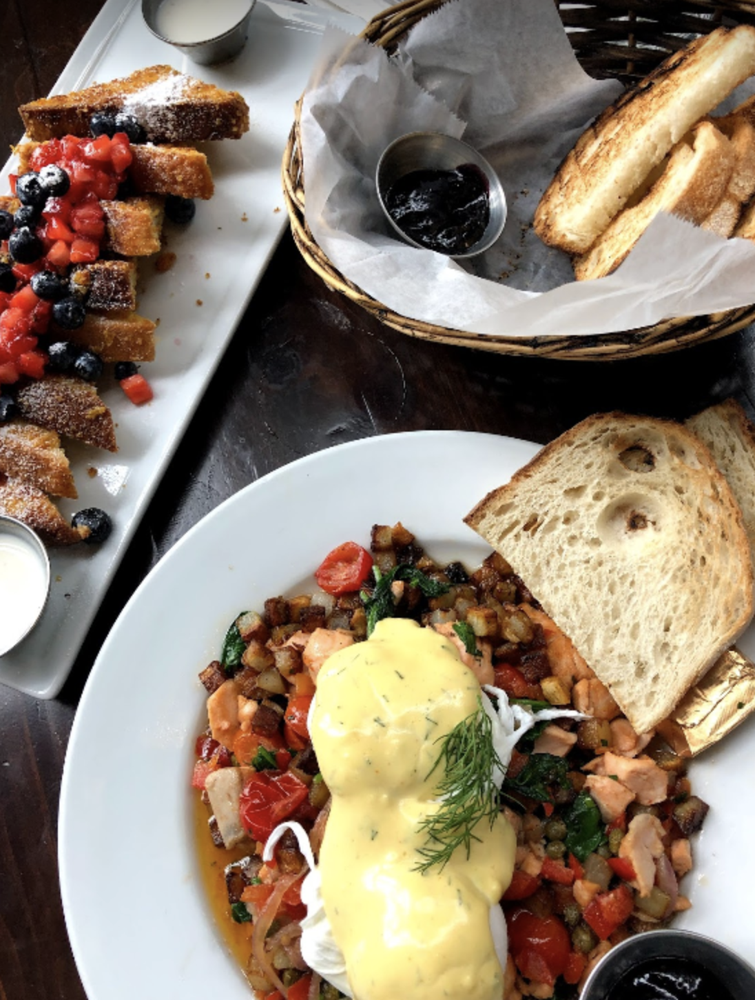
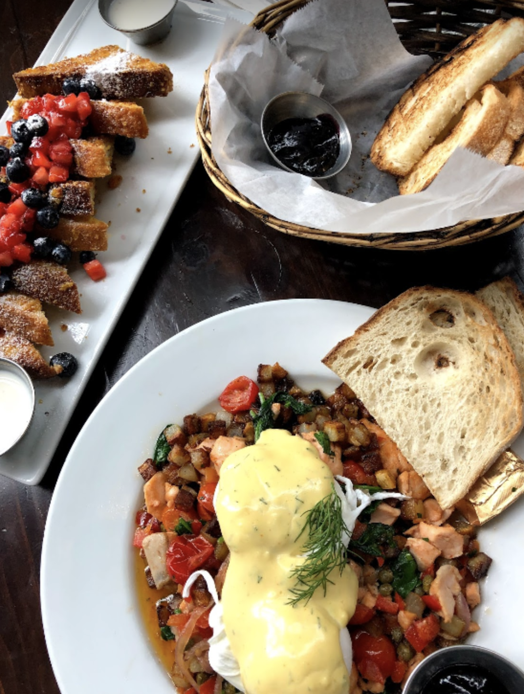
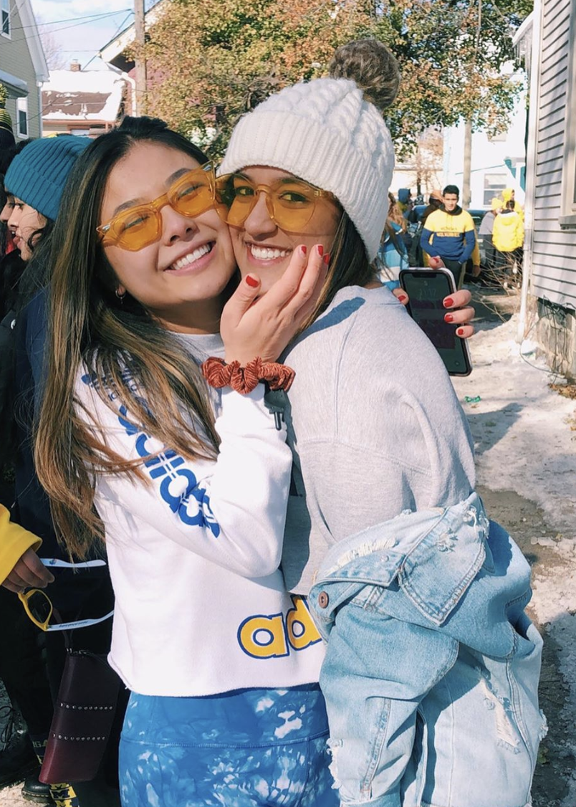
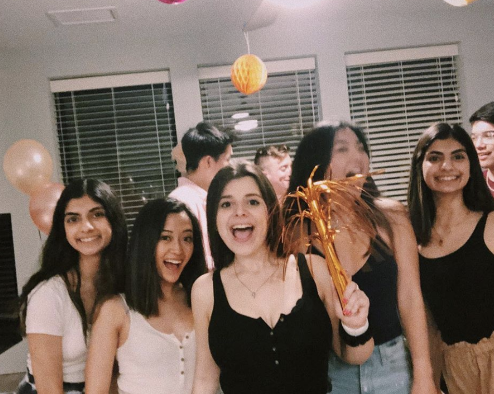
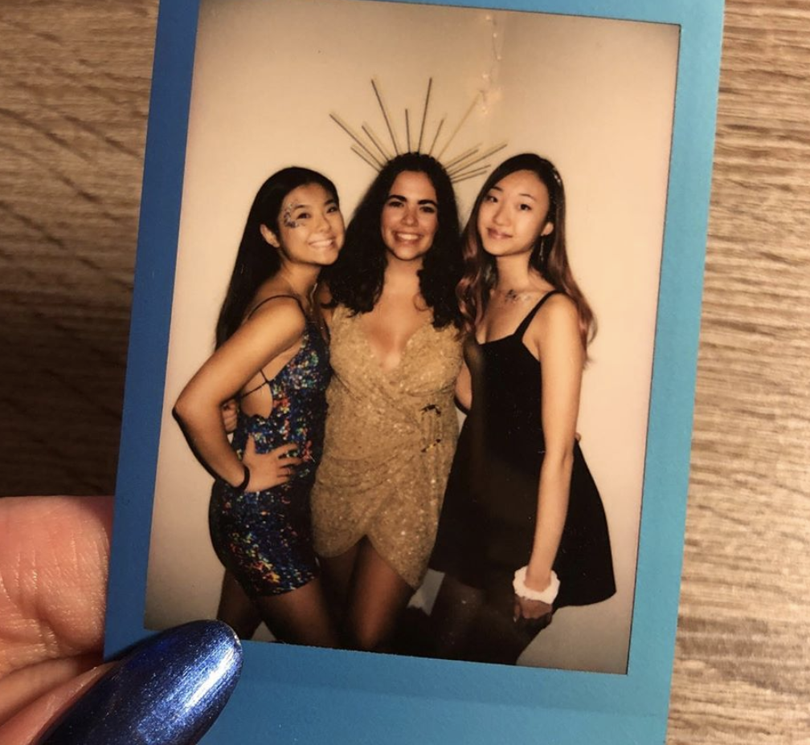
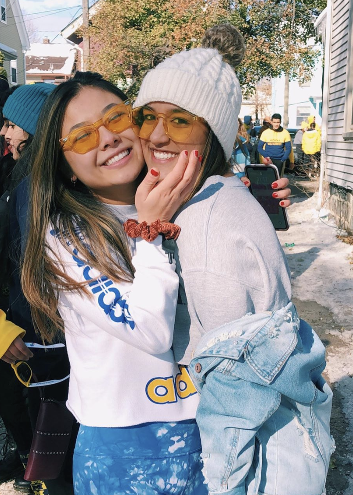
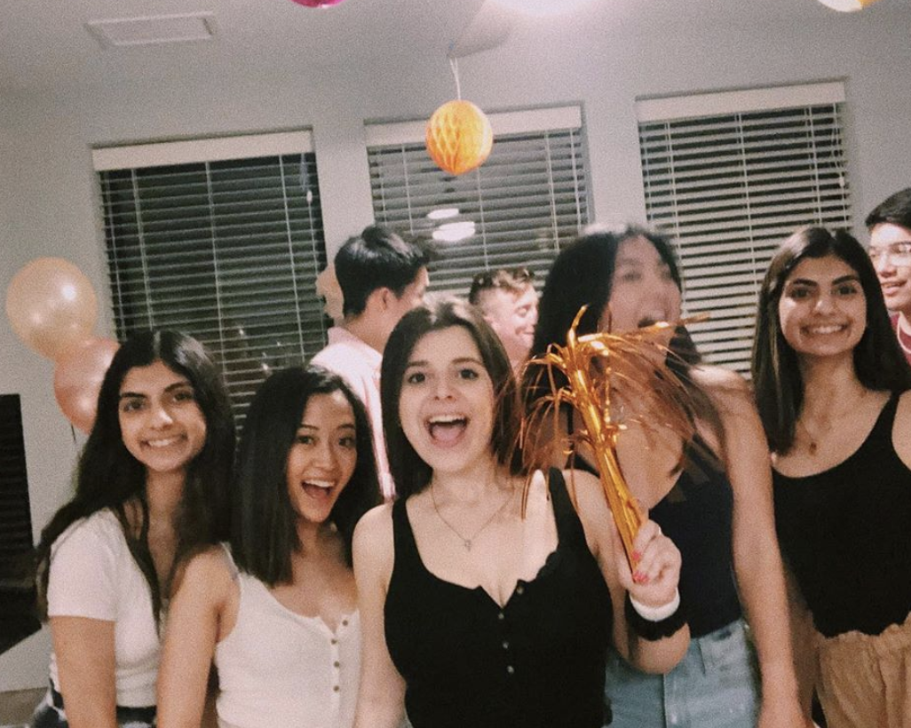
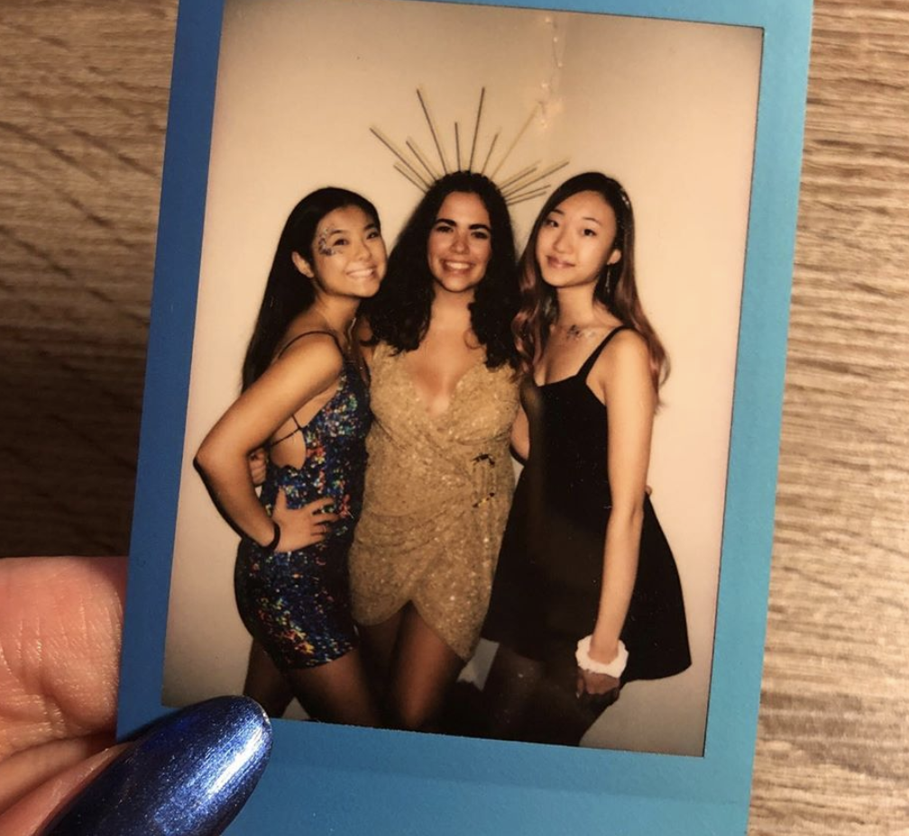

Hi, I'm Katie Xu! I like making things and meeting new people.
Bio
Having grown up in the small town of Canton, Michigan, I never envisioned myself exploring the creative space of web design and user research. I had never heard of any professions outside of the traditional careers: engineering and doctors and the vague generalities of being a “businessperson”. I liked to create, liked to daydream, and liked to imagine, but didn’t know how to tie these energies together into something tangible I could say I was. Through finding the majors I did, having conversations with people in a wide variety of industries, and doing my fair share of Linkedin stalking, I have found my home in a nice little burrow where creativity intersects with business, technology, and psychology.
Education
Currently I am a student at the University of Michigan pursuing a dual degree between the School of Information’s UX Design track and the Ross School of Business’s BBA track. I am so, so, so excited to be in both of these schools because it truly combines both of my passions: making things and meeting new people. Through the School of Information, I have been able to learn the technical skills needed to execute on my ideas. Through Ross, I have been able to learn essential presentation and problem solving frameworks needed to gain stakeholder buy-in for my ideas.
Hopes and Aspirations
There’s a lot of things I want to do with my life: I want to skydive. I want to learn a European language fluently – not like the 4 years I spent learning Spanish to no avail. I want to learn how to make latte art. I want to learn how to salsa. I want to attend a silent meditation retreat. Most of all, I want to never stop learning.

 

 




